Douze jeux de dés, un tapis de feutre, et l'ambiance du bistrot.
Jusqu'à 4 joueurs — humains ou tenus par l'ordinateur — sur le même téléphone. Activez le bouton 📳 dans un jeu pour lancer les dés en secouant le téléphone, et débloquez les 12 styles de dés au fil de vos victoires. Sons, vibrations et journal de partie sont de la partie — coupez-les d’un bouton si le patron dort.
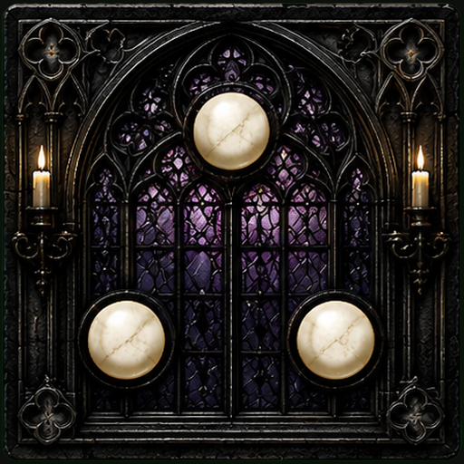
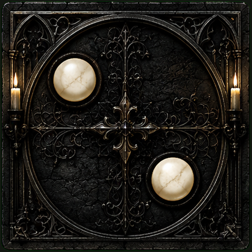
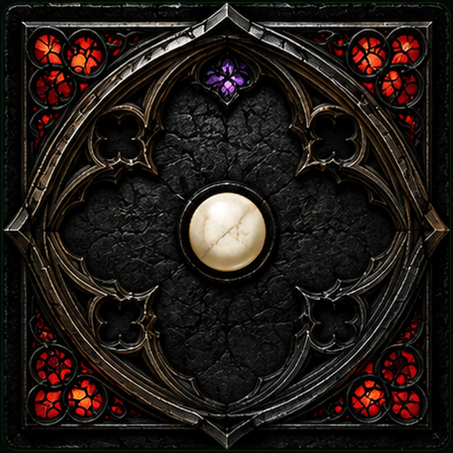
Le duel du zinc : charge, décharge, et gare à la nénette. 2-4 joueurs.
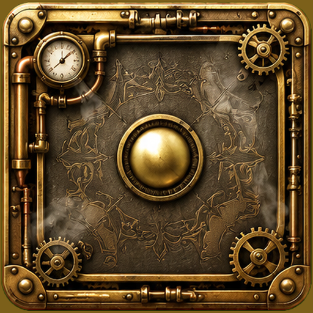
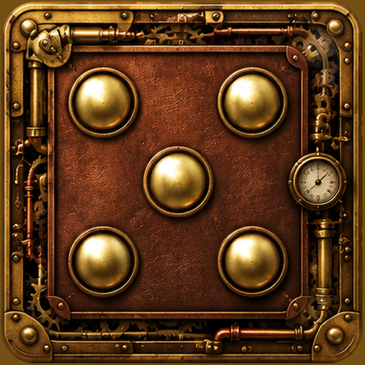
Banquez ou craquez : premier à dix mille points. 2-4 joueurs.
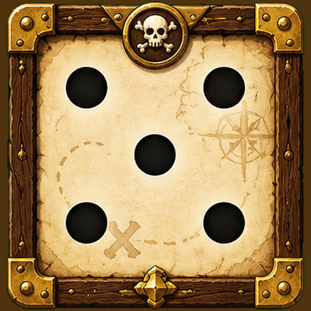
La feuille mythique : 13 cases, 3 lancers, un bonus à 63. 1-4 joueurs.
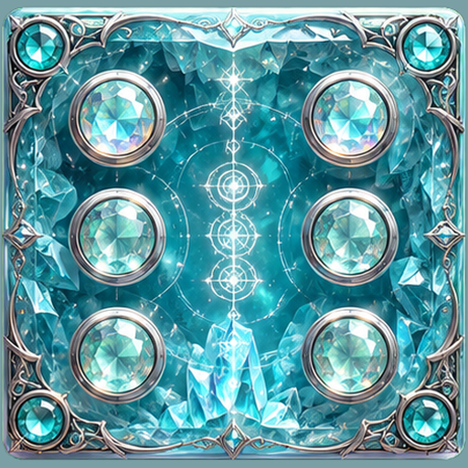
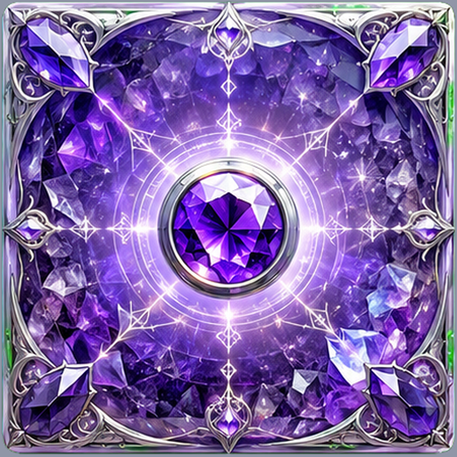
Full, carré, quinte : la meilleure main prend la manche. 2-4 joueurs.
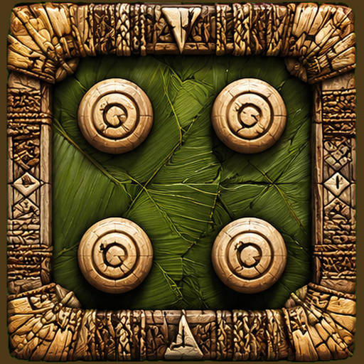
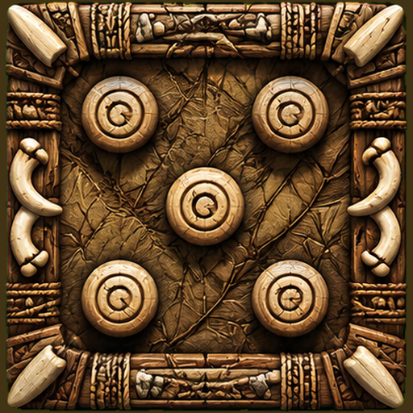
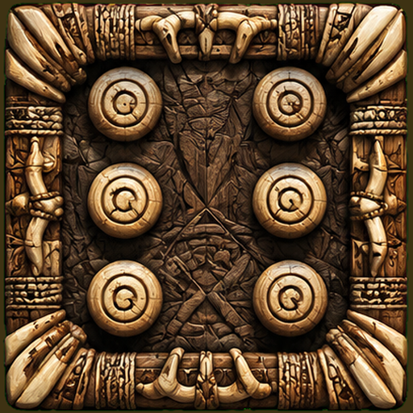
4·5·6 bat tout — et le perdant ramasse les jetons. 2-4 joueurs.
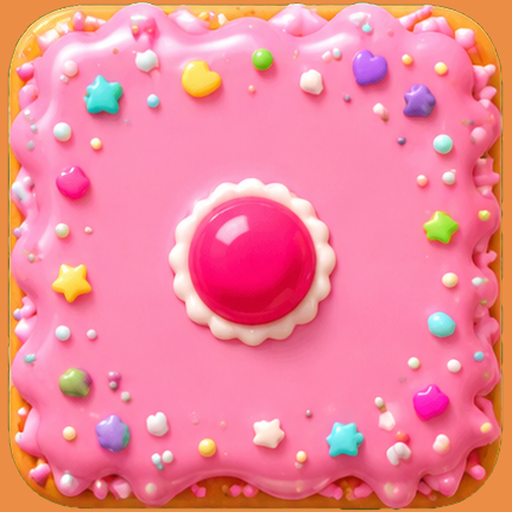
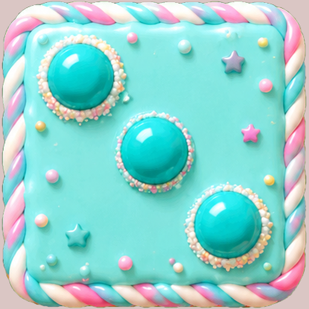
Trois vies, un 21 imbattable, dernier survivant. 2-4 joueurs.
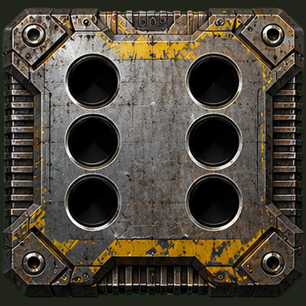
Onze manches, de 2 à 12 : visez juste. 2-4 joueurs.
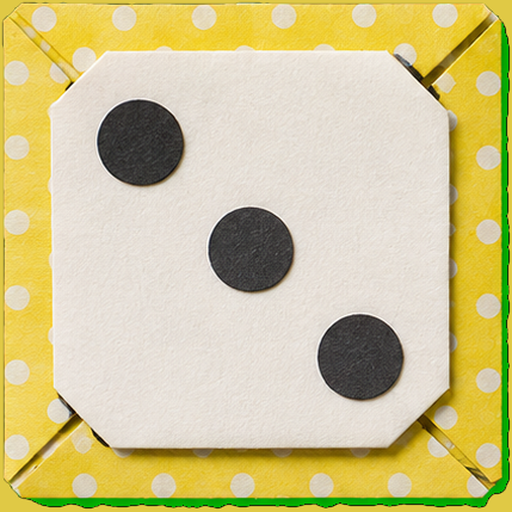
Relancez tant que vous osez… mais gare au 1 ! 2-4 joueurs.
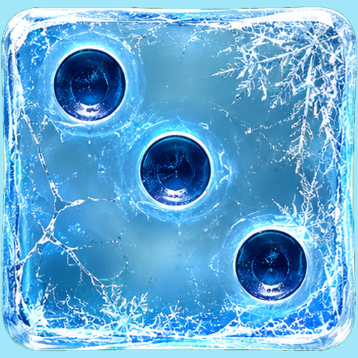
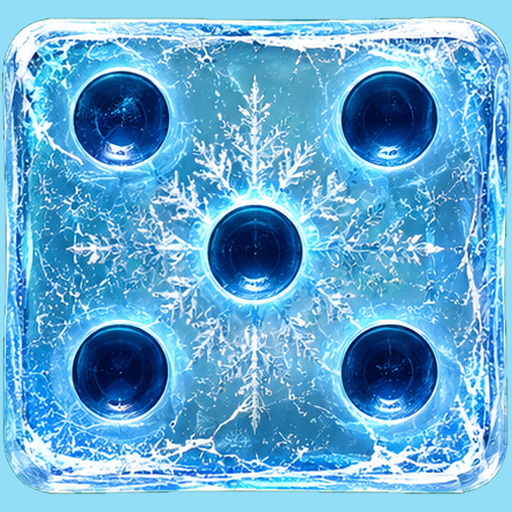
Passe ou manque ? Annoncez, puis lancez. 2-4 joueurs.
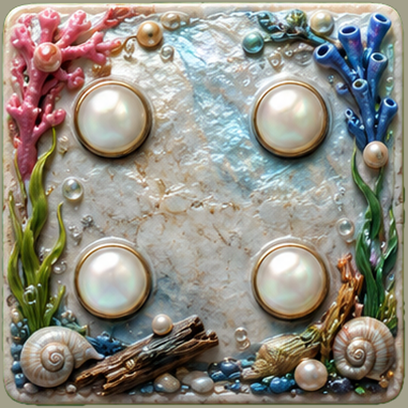
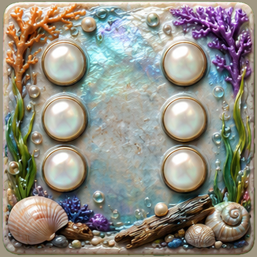
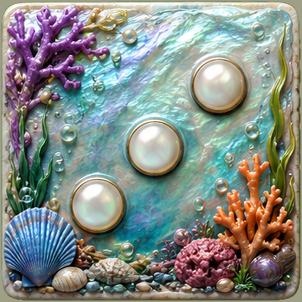
Trois jets, on garde le plus fort à chaque fois. 2-4 joueurs.
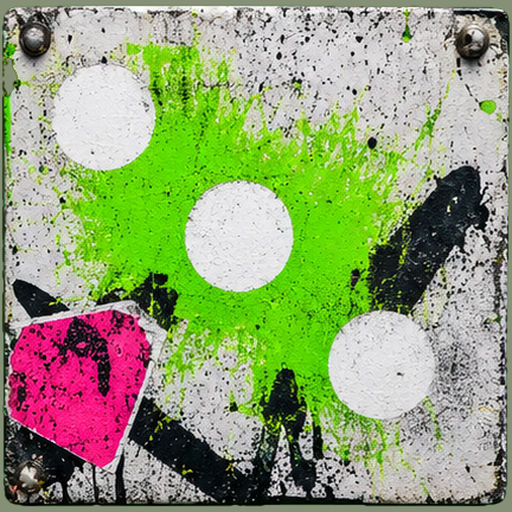
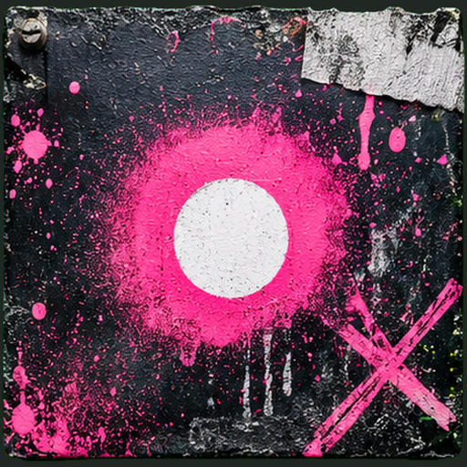
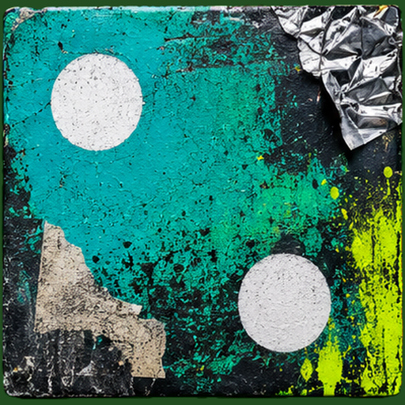
Shut the Box : abaissez les neuf tuiles. 1-4 joueurs.
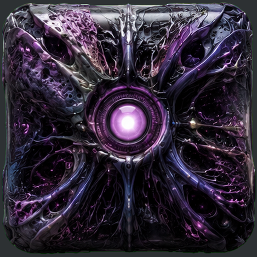
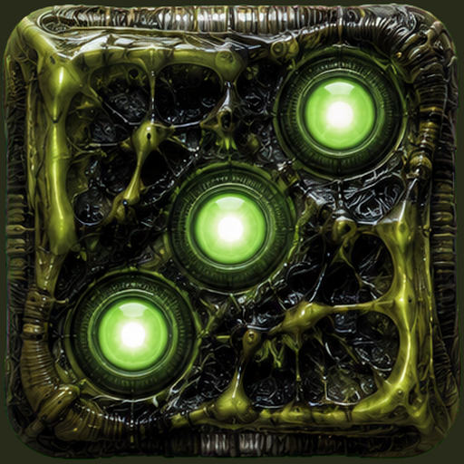
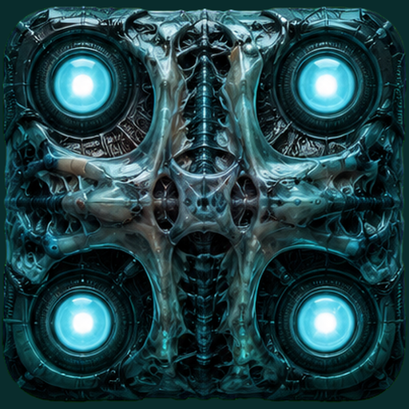
La course de 1 à 12, dans l'ordre et sans faiblir. 2-4 joueurs.
Contre l'ordinateur ou à tour de rôle. Choisissez votre jeu de cartes illustré en cours de partie. Pour jouer chacun sur son écran, passez par le Salon multi-téléphones.
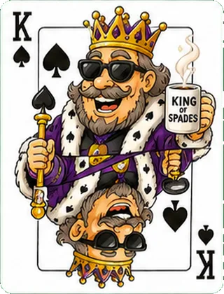
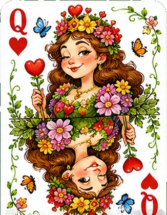
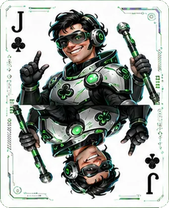
Videz votre main pour régner ; le dernier lave la vaisselle. 3-4 joueurs.
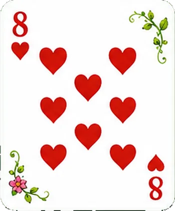
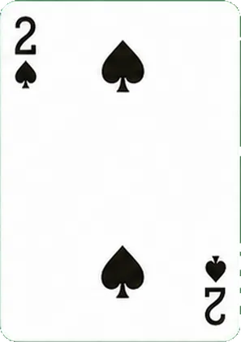
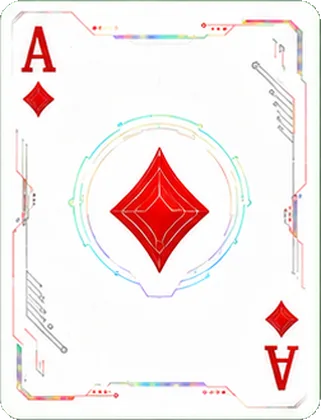
8 américain survolté : +2, saute-tour et demi-tour. 2-4 joueurs.
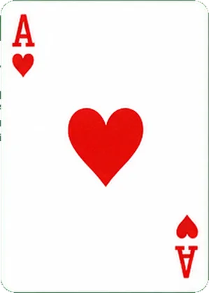
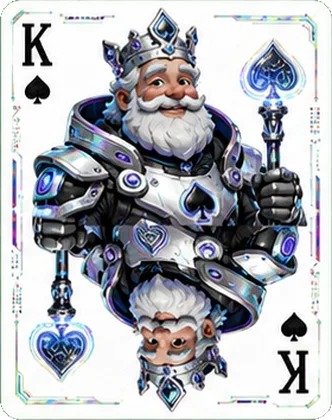
La plus forte rafle le pli — pur hasard, pur plaisir. 2 joueurs.
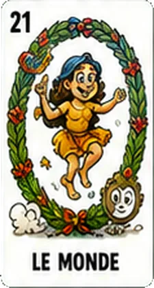
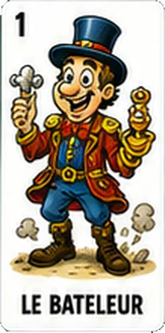
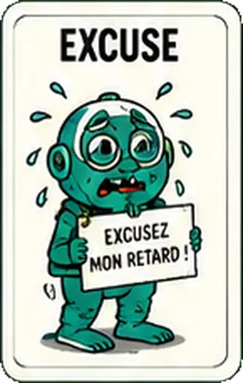
78 cartes, atouts et bouts : ramassez le plus de points. Version 4 joueurs. 🃏
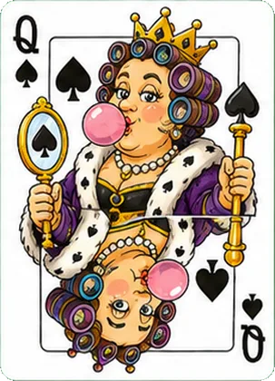
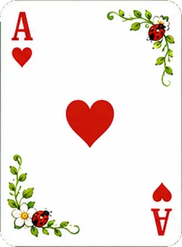
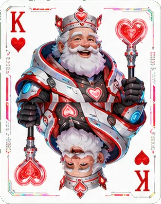
Fuyez les cœurs et la dame noire ; le plus petit score gagne. 4 joueurs.
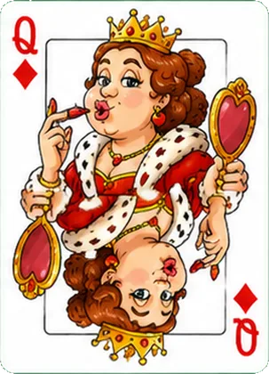
Jetez vos paires, refilez la dame solitaire au voisin ! 2-4 joueurs.
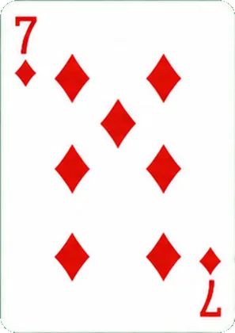
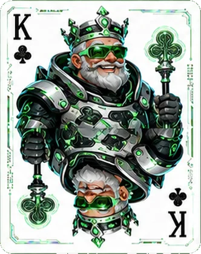
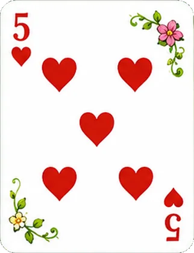
Ramassez par les sommes, balayez la table pour le bonus. Jusqu'à 11 points. 2-4 joueurs.
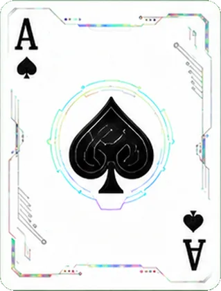
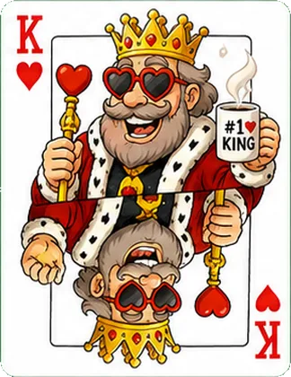
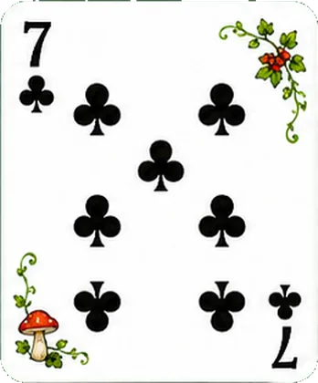
Bluffez vos annonces, démasquez les autres d'un « Menteur ! ». 2-4 joueurs.
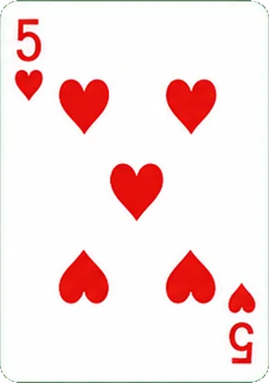
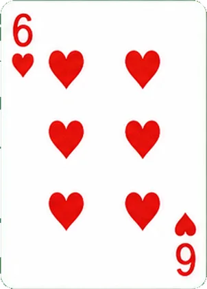
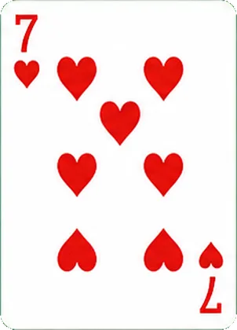
Brelans et suites : posez, étalez, videz votre main. 2-4 joueurs.
Le jeu de dominos double-six, contre l'ordinateur ou à tour de rôle. Dix styles de tuiles au choix en cours de partie.